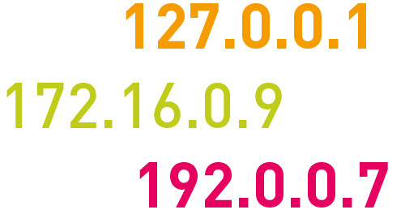

TryHackMe - BP: Networking

Contenido
| Titulo | BP: Networking |
|---|---|
| Info | Part of the Blue Primer series, learn the basics of networking |
| Maker | DarkStar7471 |
Kinda like a street address, just cooler.
Todas las computadoras tienen una direccion ip. Aca se definen los diferentes tipos de direcciones IP.

Clases de direcciones IP
| Clase | Rango |
|---|---|
| Clase A | 1-127 |
| Clase B | 128-191 |
| Clase C | 192-223 |
| Clase D | 224-239 |
| Clase E | 240-255 |
Espacio de direcciones privadas
| Clase | Rango |
|---|---|
| Clase A | 10.0.0.0 |
| Clase B | 172.16.0.0 a 172.31.255.255 |
| Clase C | 192.168.0.0 a 192.168.255.255 |
Respuestas
RESPUESTAS - SPOILER WARNING
How many categories of IPv4 addresses are there?
5 - Existen 5 clases de direcciones IP
Which type is for research? *Looking for a letter rather than a number here
E - Esta clase IP está reservado para fines experimentales sólo para R&D o estudio.
How many private address ranges are there?
3 - Existen 3 clases de direcciones IP Privadas
Which private range is typically used by businesses?
A - Clase privada
There are two common default private ranges for home routers, what is the first one?
192.168.0.0 - Comunmente utilizada para routers de casa.
How about the second common private home range?
192.168.1.0- Comunmente utilizada para routers de casa.
How many addresses make up a typical class C range? Specifically a /24
256 - 254 + 2 (reservadas)
Of these addresses two are reserved, what is the first addresses typically reserved as?
network
The very last address in a range is typically reserved as what address type?
broadcast - **172.31.255.255 Ejemplo **
A third predominant address type is typically reserved for the router, what is the name of this address type?
gateway - gateway
Which address is reserved for testing on individual computers?
127.0.0.1 - localhost
A particularly unique address is reserved for unroutable packets, what is that address? This can also refer to all IPv4 addresses on the local machine.
0.0.0.0 - 0.0.0.0
Binary to Decimal
En esta parte debemos de realizar la conversion de binario a Decimal, para hacer esto utilizamos la siguiente tabla:
| 128 | 64 | 32 | 16 | 8 | 4 | 2 | 1 |
|---|
Para poder convertir de binario a decimal (utilizando la tabla) ordenamos los numeros (0’s y 1’s) de tal forma que queden ordenados con los valores de arriba. Si el numero es 1 tomamos el numero, si es 0, no.
| 128 | 64 | 32 | 16 | 8 | 4 | 2 | 1 |
|---|---|---|---|---|---|---|---|
| 1 | 0 | 0 | 1 | 0 | 0 | 1 | 0 |
Si el numero es 1 tomamos el numero, si es 0, no.
| Numeros Guia | 128 | 64 | 32 | 16 | 8 | 4 | 2 | 1 |
|---|---|---|---|---|---|---|---|---|
| Binario | 1 | 0 | 0 | 1 | 0 | 0 | 1 | 0 |
| Decimal | 128 | 0 | 0 | 16 | 0 | 0 | 2 | 0 |
Ahora que tenemos los numeros, sumamos todos (no es necesario tomar los 0’s) y obtenemos el resultado:
| 128+0+0+16+0+0+2+0 | = 146 |
|---|
Realizamos lo mismo para todos los numeros.
Respuestas
RESPUESTAS - SPOILER WARNING
1001 0010 = 128+16+2 = 146
0111 0111 = 64+32+16+4+2+1 = 119
1111 1111 = 128+64+32+16+8+4+2+1 = 255
1100 0101 = 128+64+4+1 = 197
1111 0110 = 128+64+32+16+4+2 = 246
0001 0011 = 16+2+1 = 19
1000 0001 = 128+1 = 129
0011 0001 = 32+16+1 = 49
0111 1000 = 64+32+16+8 = 120
1111 0000 = 128+64+32+16 = 240
0011 1011 = 32+16+8+2+1 = 59
0000 0111 = 4+2+1 = 7
Decimal to Binary

Para convertir de decimal a Binario, tomamos el numero y lo dividimos dentro de 2, hasta llegar a su minima expresion (0). Si el resultado o numero es par entonces colocamos 0 si es impar 1. El primer número quedaria de la siguiente forma:
238 = 238 -----> 0
238 / 2 = 119 -----> 1
119 / 2 = 59 -----> 1
59 / 2 = 29 -----> 1
29 / 2 = 14 -----> 0
14 / 2 = 7 -----> 1
7 / 2 = 3 -----> 1
3 / 2 = 1 -----> 1
El resultado se lee de abajo hacia arriba: 1110 1110.
Realizamos lo mismo para todos los numeros.
Respuestas
RESPUESTAS - SPOILER WARNING
34 = 0100 1000
123 = 0111 1011
50 = 0011 0010
255 = 01111 1111
200 = 0110 0100
10 = 0101 0000
138 = 0100 0101
1 = 0000 0001
13 = 0000 1101
250 = 0111 1101
114 = 0111 0010
Address Class Identification
En esta seccion se necesita identificar a la clase que pertenece la IP dada utilizando la tabla.
Clases de direcciones IP
| Clase | Rango |
|---|---|
| Clase A | 1-127 |
| Clase B | 128-191 |
| Clase C | 192-223 |
| Clase D | 224-239 |
| Clase E | 240-255 |
Espacio de direcciones privadas
| Clase | Rango |
|---|---|
| Clase A | 10.0.0.0 |
| Clase B | 172.16.0.0 a 172.31.255.255 |
| Clase C | 192.168.0.0 a 192.168.255.255 |
Respuestas
RESPUESTAS - SPOILER WARNING
10.240.1.1 = A
150.10.15.0 = B
192.14.2.0 = C
148.17.9.1 = B
193.42.1.1 = C
126.8.156.0 = A
220.200.23.1 = C
230.230.45.58 = D
177.100.18.4 = B
119.18.45.0 = A
117.89.56.45 = A
215.45.45.0 = C
Obtener respuestas de Forma Facil
Links de ayuda